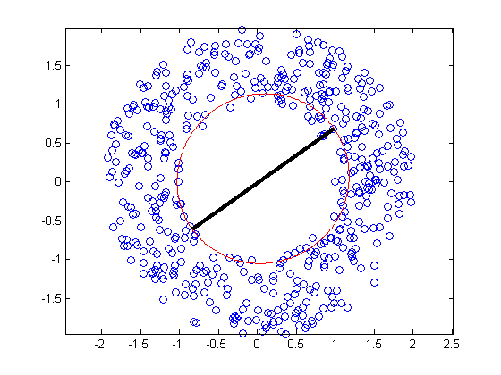
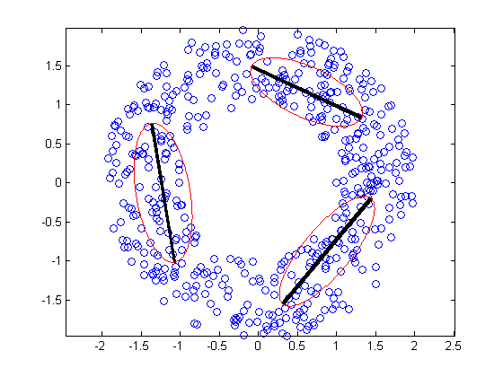
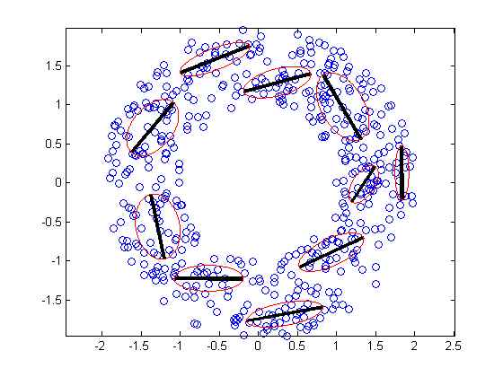

function mixPpcaDemoNetlab()
if ~exist('gmm')
error('must install netlab from http://www.ncrg.aston.ac.uk/netlab/index.php')
end
data = mkAnnulusData;
Ks = [1 3 10];
for i=1:length(Ks)
ncentres = Ks(i);
ppca_dim = 1;
fh1 = figure;
plot(data(:, 1), data(:, 2), 'o')
set(gca, 'Box', 'on')
axis equal
hold on
mix = gmm(2, ncentres, 'ppca', ppca_dim);
options = foptions;
options(14) = 10;
options(1) = -1;
mix = gmminit(mix, data, options);
options(1) = 1;
options(14) = 30;
[mix, options, errlog] = gmmem(mix, data, options);
for i = 1:ncentres
v = mix.U(:,:,i);
start=mix.centres(i,:)-sqrt(mix.lambda(i))*(v');
endpt=mix.centres(i,:)+sqrt(mix.lambda(i))*(v');
linex = [start(1) endpt(1)];
liney = [start(2) endpt(2)];
line(linex, liney, 'Color', 'k', 'LineWidth', 3)
theta = 0:0.02:2*pi;
x = sqrt(mix.lambda(i))*cos(theta);
y = sqrt(mix.covars(i))*sin(theta);
rot_matrix = [v(1) -v(2); v(2) v(1)];
ellipse = (rot_matrix*([x; y]))';
ellipse = ellipse + ones(length(theta), 1)*mix.centres(i,:);
plot(ellipse(:,1), ellipse(:,2), 'r-')
end
fname = sprintf('mixPpcaAnnulus%d', ncentres);
printPmtkFigure(fname)
end
end
function [X] = mkAnnulusData()
n = 500;
r = rand(1,n) + 1;
theta = rand(1,n)*(2*pi);
x1 = r .* sin(theta);
x2 = r .* cos(theta);
X = [x1(:) x2(:)];
end
function data = mkClusterData()
ndata = 500;
data = randn(ndata, 2);
prior = [0.3 0.5 0.2];
datap = [0.2 0.5 0.3];
datac = [0 2; 0 0; 2 3.5];
datacov = repmat(eye(2), [1 1 3]);
data1 = data(1:prior(1)*ndata,:);
data2 = data(prior(1)*ndata+1:(prior(2)+prior(1))*ndata, :);
data3 = data((prior(1)+prior(2))*ndata +1:ndata, :);
data1(:, 1) = data1(:, 1)*0.1 + 2.0;
data1(:, 2) = data1(:, 2)*0.8 + 3.5;
datacov(:, :, 3) = [0.1*0.1 0; 0 0.8*0.8];
rotn = [cos(pi/6) -sin(pi/6); sin(pi/6) cos(pi/6)];
data2(:,1) = data2(:, 1)*0.2;
data2 = data2*rotn;
datacov(:, :, 2) = rotn' * [0.04 0; 0 1] * rotn;
data3(:, 2) = data3(:, 2)*0.1;
data3 = data3 + repmat([0 2], prior(3)*ndata, 1);
data = [data1; data2; data3];
end
Cycle 1 Error 1513.488303
Cycle 2 Error 1513.488303
Cycle 1 Error 1289.612495
Cycle 2 Error 1287.892724
Cycle 3 Error 1287.336687
Cycle 4 Error 1286.882851
Cycle 5 Error 1286.473095
Cycle 6 Error 1286.084450
Cycle 7 Error 1285.703084
Cycle 8 Error 1285.320025
Cycle 9 Error 1284.928975
Cycle 10 Error 1284.525131
Cycle 11 Error 1284.104556
Cycle 12 Error 1283.663846
Cycle 13 Error 1283.199995
Cycle 14 Error 1282.710398
Cycle 15 Error 1282.193004
Cycle 16 Error 1281.646577
Cycle 17 Error 1281.071065
Cycle 18 Error 1280.467996
Cycle 19 Error 1279.840802
Cycle 20 Error 1279.194998
Cycle 21 Error 1278.538106
Cycle 22 Error 1277.879333
Cycle 23 Error 1277.229026
Cycle 24 Error 1276.597977
Cycle 25 Error 1275.996652
Cycle 26 Error 1275.434437
Cycle 27 Error 1274.918953
Cycle 28 Error 1274.455549
Cycle 29 Error 1274.047018
Cycle 30 Error 1273.693617
Maximum number of iterations has been exceeded
Cycle 1 Error 1186.048426
Cycle 2 Error 1173.520543
Cycle 3 Error 1169.441907
Cycle 4 Error 1166.869418
Cycle 5 Error 1164.694615
Cycle 6 Error 1162.678774
Cycle 7 Error 1160.830123
Cycle 8 Error 1159.256003
Cycle 9 Error 1158.042561
Cycle 10 Error 1157.148090
Cycle 11 Error 1156.445475
Cycle 12 Error 1155.828536
Cycle 13 Error 1155.240789
Cycle 14 Error 1154.659473
Cycle 15 Error 1154.084174
Cycle 16 Error 1153.530572
Cycle 17 Error 1153.018999
Cycle 18 Error 1152.560612
Cycle 19 Error 1152.151926
Cycle 20 Error 1151.779170
Cycle 21 Error 1151.425292
Cycle 22 Error 1151.074791
Cycle 23 Error 1150.716424
Cycle 24 Error 1150.345383
Cycle 25 Error 1149.965381
Cycle 26 Error 1149.588736
Cycle 27 Error 1149.231904
Cycle 28 Error 1148.907764
Cycle 29 Error 1148.620574
Cycle 30 Error 1148.367194
Maximum number of iterations has been exceeded
  